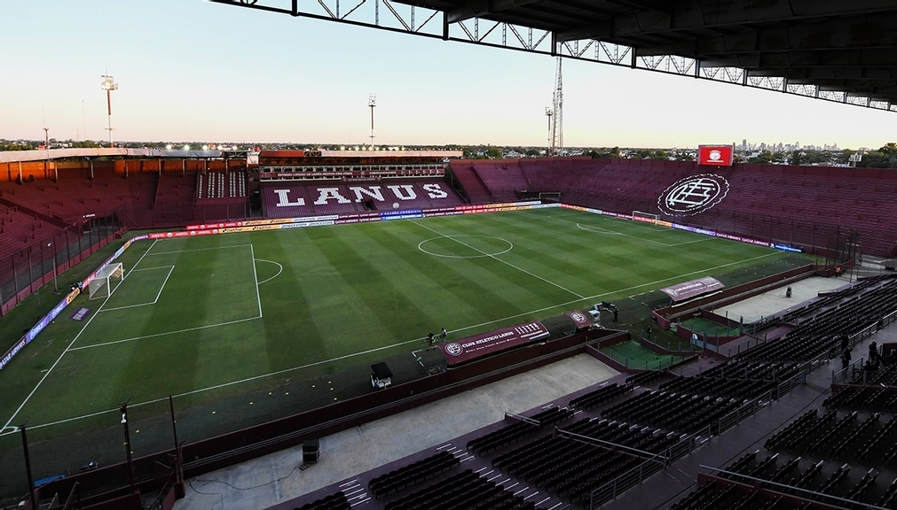
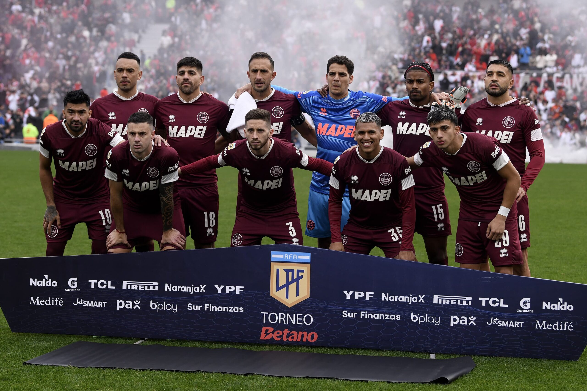
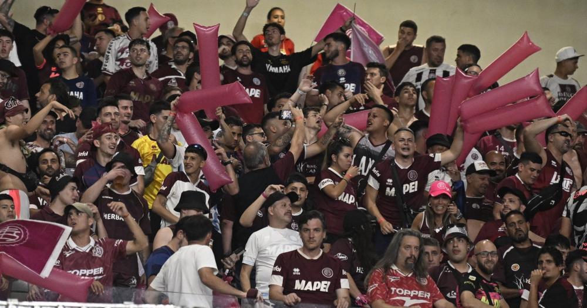

Para ser campéon, hoy hay que ganar.
El Club Atlético Lanús se prepara para un emocionante enfrentamiento contra uno de los equipos más destacados de Argentina, Boca Juniors. En este partido, los jugadores de Lanús buscarán defender su casa con toda la pasión que los caracteriza, mientras que los hinchas granates llenarán el estadio con su aliento incondicional.
Este partido no es solo un evento deportivo, sino una oportunidad para demostrar el espíritu de unidad y dedicación que representa al Club Atlético Lanús. Los hinchas tendrán la oportunidad de presenciar un juego lleno de intensidad, donde cada pase y cada gol contará en la lucha por la victoria.
El evento incluye:
- Actividades previas al partido en el estadio
- Stands de venta de artículos oficiales
- Zona exclusiva para socios
- Un espectáculo de luces previo al inicio del partido
Además, contaremos con la presencia de reconocidas figuras del club que compartirán su experiencia y legado con los hinchas presentes. ¡Una oportunidad única para conectar con la historia de Lanús!
Te esperamos para vivir juntos esta gran experiencia. ¡No faltes y ven a apoyar a Lanús!
Horarios y Accesos
El estadio abrirá sus puertas a las 16:00 horas, y el partido comenzará a las 18:00 horas. Recuerda llegar con anticipación para disfrutar de todas las actividades previas.
Entradas: Las entradas estarán disponibles en boleterías del estadio o a través de la página oficial del club.
Recomendaciones
- Llega con anticipación para evitar filas.
- Usa ropa cómoda y lleva protección solar.
- Recuerda llevar tu carnet de socio si eres miembro del club.
- Está prohibido ingresar con objetos contundentes o pirotecnia.
Gracias por ser parte de esta experiencia única. ¡Vamos Lanús!